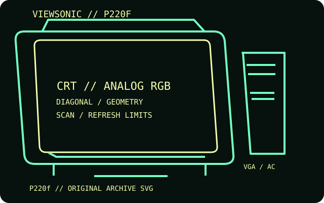

[ INDIVIDUAL COMPONENT // DISPLAYS ]
ViewSonic P220f
A 22-inch PerfectFlat aperture-grille CRT with a 20-inch viewable area, marketed for graphics and high-resolution desktop work.

IDENTIFICATION: Match the complete model and regional suffix on the rear label. Published CRT timing limits do not guarantee a particular used unit's condition; verify the tested host, cable and displayed mode.
Specifications
| Catalog subcategory | CRT displays |
|---|---|
| Exact product / family | ViewSonic P220f |
| Tube diagonal & image geometry | 22-inch nominal tube / 20-inch viewable diagonal; 0.24 mm aperture-grille pitch and 4:3 image geometry. Flat face and OSD geometry controls help align the raster to the bezel. |
| Resolution & refresh | Maximum 2048 × 1536; recommended operating mode 1280 × 1024 at 85 Hz. Horizontal scan range 30–110 kHz and vertical range 50–160 Hz. |
| Video inputs | Single 15-pin D-sub VGA analog RGB input with VESA DDC/DPMS support; no digital video input. |
| Power | Universal AC input, 100–240 V, 50/60 Hz. The archived specifications list power-saving below 15 W in suspend and below 3 W off; check the individual rear label for rated current. |
| Host compatibility | Use an analog VGA-capable PC or Mac graphics card and select a timing within the monitor's scan range. A current digital-only GPU needs an active HDMI/DisplayPort-to-VGA converter. |
Identification and compatibility notes
The P220f is a high-bandwidth analog display; the maximum pixel mode may require a capable DAC and a properly shielded VGA cable.
Record the rear-label model, regional voltage rating, video connector used, source timing, adapter chain, visible image area and geometry/convergence condition. CRTs contain hazardous high-voltage circuits and heavy components; internal service belongs to qualified technicians.
Manufacturer documentation and sources
- ViewSonic — P220f user manualModel-specific operating manual and display geometry.
- ViewSonic — P220f manual archiveArchived manual scan and technical reference.